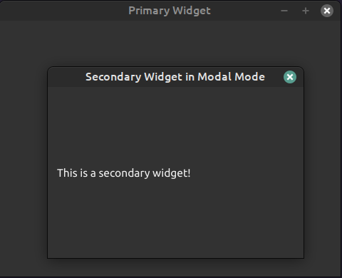

Keyboard shortcuts:
N/СпейсNext Slide
PPrevious Slide
OSlides Overview
ctrl+left clickZoom Element
If you want print version => add '
?print-pdf' at the end of slides URL (remove '#' fragment) and then print.
Like: https://wwwcourses.github.io/...CourseIntro.html?print-pdf
Created for

Iva E. Popova, 2022-2023,

Hand Code the UI of a Login Form Widget
Hand Code the UI of a Login Form Widget
Hand Code the UI of a Login Form Widget
Why?
- The code produced by pyuic6 is overwhelmed and not clean.
- Hand-coding could be even faster (if you have know your IDE well) than using the QtDesigner.
- You can really learn Qt App methodology only if you have hand-coded a simple GUI App.
- For next examples, we'll be using the template we've already created:
- Tip: you can setup a custom snippet with this template in your editor.
- For PyCharm see Tutorial: Creating and Applying Live Templates (Code Snippets)
- For VSCode see: Snippets in Visual Studio Code
QWidget class
- QWidget is the parent class of all other widgets (including QMainWindow)
- All properties and methods of
QWidgetclass will be also available in any other widget. - When a QWidget is created without a parent and its show() method is called, it becomes a top-level window
- When we use it as a top-level window (as we did with in our template), there are some window-specific properties we can set.
- note, that the cursor value is an enum type, defined in QtCore module
- Every property of a
QWidgetobject has its Access function, which allows you to set that property after the object is created - Reference: QWidget Class
window = MainWindow(cursor=qtc.Qt.CursorShape.WaitCursor)
# equivalent to example above
window = MainWindow()
window.setCursor(qtc.Qt.CursorShape.WaitCursor)
Primary and Child Widgets

- Any QWidget that has no parent will become a top-level window.
- Typically, in our GUI application, we want only one top-level window, which serves as the primary window.
- If we pass a parent argument when creating a new widget, that widget will be a child of the parent widget and will become a part of its parent.
- Reference: Primary and secondary windows
Primary and Child Widgets - example
"""primary_secondary_widgets.py"""
import sys
import PyQt6.QtWidgets as qtw
class SecondaryWidget(qtw.QDialog):
def __init__(self, parent=None):
super().__init__(parent)
self.setFixedSize(300, 200)
layout = qtw.QVBoxLayout()
label = qtw.QLabel("This is a secondary widget!")
layout.addWidget(label)
self.setLayout(layout)
# Primary Widget (Main Window)
class PrimaryWidget(qtw.QMainWindow):
def __init__(self):
super().__init__()
self.setWindowTitle("Primary Widget")
self.setGeometry(50, 50, 400, 300)
# Button for opening modal dialog
modal_button = qtw.QPushButton("Open Modal Dialog", self)
modal_button.setGeometry(100, 100, 200, 40)
modal_button.clicked.connect(self.open_modal_dialog)
# Button for opening modeless dialog
modeless_button = qtw.QPushButton("Open Modeless Dialog", self)
modeless_button.setGeometry(100, 150, 200, 40)
modeless_button.clicked.connect(self.open_modeless_dialog)
def open_modal_dialog(self):
# Create and open a new secondary widget in modal mode
modal_dialog = SecondaryWidget(self)
modal_dialog.setWindowTitle('Secondary Widget in Modal Mode')
modal_dialog.exec() # Blocks interaction with main window until closed
def open_modeless_dialog(self):
# Create and open a new secondary widget in modeless mode
modeless_dialog = SecondaryWidget(self)
modeless_dialog.setWindowTitle('Secondary Widget in Modeless Mode')
modeless_dialog.show() # Allows interaction with both windows
if __name__=="__main__":
app = qtw.QApplication(sys.argv)
# app.setStyle("Windows")
main_window = PrimaryWidget()
main_window.show()
sys.exit(app.exec())
Create user input widgets
- Of course, we did not see the created widgets, because they are not attached to our main window
- We can attach them directly to out main window by passing it as parent argument to QLineEdit() constructor :
- But we did not set the geometry of our main windows, so the result is not what we want.
- References:
- QLineEdit Class
- EchoMode Property
# create user input widgets:
user_name_input = qtw.QLineEdit()
password_input = qtw.QLineEdit()
#
password_input.setEchoMode(qtw.QLineEdit.EchoMode.Password)
# create user input widgets:
user_name_input = qtw.QLineEdit(self)
password_input = qtw.QLineEdit(self)
Window Geometry
- The
widget.setGeometry(x, y, width, height)method in PyQt is used to define both the position and size of a widget within its parent or on the screen x,y- specifies thexandycoordinate of the widget’s top-left corner.width,height- specifies thewidthandheightof the widget in pixels.- Example:
- Reference: Window Geometry
self.setGeometry(300, 200, 500, 300)

Widget Position
- In order to set a widget position within its parent widget, we can use the
move(int x, int y)widget method - But there is a better approach - to use a Layout for children positioning
- Reference: pos : QPoint
class MainWindow(qtw.QWidget):
def __init__(self , *args, **kwargs):
super().__init__(*args, **kwargs)
#set window geometry
self.setGeometry(300, 200, 500, 300)
# create user input widgets:
user_name_input = qtw.QLineEdit(self)
password_input = qtw.QLineEdit(self)
user_name_input.move(20, 10)
password_input.move(20,50)
Layout Management
- The Qt layout system provides a simple and powerful way of automatically arranging child widgets within a widget to ensure that they make good use of the available space
- Qt provides many Layout Classes useful for different use-cases.
- The setLayout() method applies a layout to a widget. And the layout takes care of the following tasks:
- Positioning of child widgets
- Sensible default sizes for windows
- Sensible minimum sizes for windows
- Resize handling
- Automatic updates when contents change:
- To create more complex layouts, you can nest layouts inside each other.
- References:
- Layout Management @Qt
- Layout Management @Qt for Python
QFormLayout Class
- For our Login Form Wdget is best to use the QFormLayout Class
- The QFormLayout class manages forms of input widgets and their associated labels.
- References:
- QFormLayout @Qt for Python
- QFormLayout Class @Qt

Create the Form Layout
- For our Login Form Widget is best to use the QFormLayout Class
# create user input widgets:
user_name_input = qtw.QLineEdit()
password_input = qtw.QLineEdit()
password_input.setEchoMode(qtw.QLineEdit.EchoMode.Password)
# create the submit button:
btn_submit = qtw.QPushButton('Login')
# create Form Layout and layout widgets in it
form_layout = qtw.QFormLayout()
form_layout.addRow('User name: ', user_name_input)
form_layout.addRow('Password: ', password_input)
form_layout.addRow(btn_submit)
# apply the form_layout to our widget
# this will attach our form widget's into main window
self.setLayout(form_layout)
TASK: add Submit and Cancel buttons to our login form

References && Self-Learning
References && Self-Learning
PyQt Official Documentation
- Qt Documentation - note,that this documentation covers Qt framework, i.e. C++ classes, but it's most comprehensive and useful.
- PyQt6 Reference Guide - the official PyQt6 documentation from riverbankcomputing.com
- Qt for Python Documentation - this is the documentation for PySide, but it's more useful than the sparse docs in official PyQt
- PyQt's documentation covers only the Python-specific differences and lacks comprehensive class reference, tutorials and example code which can be find in Qt's documentation.